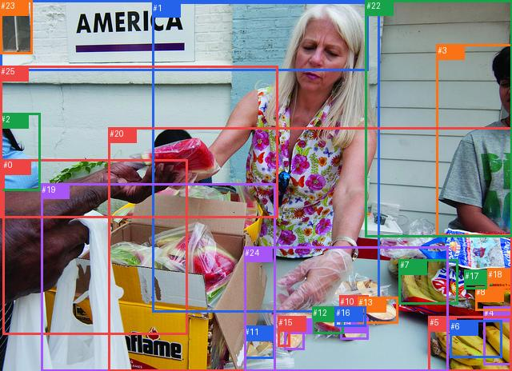

rank_below50_0001

完整GT
| 主体 | GT谓词 | 客体 |
|---|
| 0 | holding | 20 |
| 1 | beside | 3 |
| 1 | holding | 20 |
| 1 | looking at | 20 |
| 3 | beside | 1 |
| 5 | beside | 17 |
| 5 | on | 24 |
| 7 | beside | 18 |
| 7 | on | 24 |
| 17 | beside | 5 |
| 18 | beside | 7 |
| 21 | on | 25 |
预测top50
| 排名 | 主体→谓词→客体 | score | fused logit | 是否GT |
|---|
| 1 | #0 → holding → #19 | 0.982350 | 4.019201 | False |
| 2 | #1 → in → #20 | 0.973824 | 3.616386 | False |
| 3 | #23 → on → #21 | 0.971490 | 3.528561 | False |
| 4 | #2 → leaning on → #25 | 0.970460 | 3.492042 | False |
| 5 | #1 → picking → #14 | 0.969784 | 3.468698 | False |
| 6 | #3 → leaning on → #22 | 0.969218 | 3.449545 | False |
| 7 | #1 → picking → #15 | 0.968071 | 3.411782 | False |
| 8 | #7 → on → #24 | 0.958760 | 3.146224 | True |
| 9 | #1 → holding → #19 | 0.957004 | 3.102699 | False |
| 10 | #11 → in → #19 | 0.954004 | 3.032103 | False |
| 11 | #1 → picking → #12 | 0.953602 | 3.022993 | False |
| 12 | #5 → on → #24 | 0.950383 | 2.952533 | True |
| 13 | #13 → on → #24 | 0.947715 | 2.897336 | False |
| 14 | #19 → on → #24 | 0.947082 | 2.884645 | False |
| 15 | #9 → on → #24 | 0.947000 | 2.883006 | False |
| 16 | #5 → on → #20 | 0.946479 | 2.872673 | False |
| 17 | #1 → picking → #16 | 0.943180 | 2.809376 | False |
| 18 | #16 → on → #9 | 0.942835 | 2.802945 | False |
| 19 | #12 → on → #24 | 0.941149 | 2.772097 | False |
| 20 | #16 → on → #24 | 0.941075 | 2.770757 | False |
| 21 | #1 → picking → #13 | 0.939190 | 2.737258 | False |
| 22 | #14 → on → #24 | 0.933763 | 2.645987 | False |
| 23 | #21 → on → #25 | 0.933007 | 2.633821 | True |
| 24 | #7 → on → #20 | 0.932330 | 2.623049 | False |
| 25 | #13 → on → #9 | 0.927873 | 2.554467 | False |
| 26 | #19 → on → #20 | 0.922110 | 2.471364 | False |
| 27 | #6 → on → #20 | 0.922068 | 2.470781 | False |
| 28 | #18 → on → #20 | 0.921496 | 2.462852 | False |
| 29 | #12 → on → #9 | 0.918960 | 2.428297 | False |
| 30 | #4 → on → #20 | 0.916325 | 2.393433 | False |
| 31 | #8 → on → #20 | 0.915663 | 2.384827 | False |
| 32 | #6 → on → #24 | 0.911567 | 2.332918 | False |
| 33 | #15 → on → #24 | 0.907220 | 2.280152 | False |
| 34 | #17 → on → #20 | 0.906847 | 2.275732 | False |
| 35 | #1 → holding → #10 | 0.906002 | 2.265772 | False |
| 36 | #4 → on → #24 | 0.905838 | 2.263849 | False |
| 37 | #14 → on → #20 | 0.901863 | 2.218101 | False |
| 38 | #23 → on → #25 | 0.899894 | 2.196043 | False |
| 39 | #10 → on → #24 | 0.898267 | 2.178116 | False |
| 40 | #3 → looking at → #1 | 0.892602 | 2.117599 | False |
| 41 | #12 → on → #20 | 0.888433 | 2.074834 | False |
| 42 | #11 → on → #24 | 0.884375 | 2.034530 | False |
| 43 | #1 → standing on → #24 | 0.880771 | 1.999752 | False |
| 44 | #13 → on → #20 | 0.879412 | 1.986869 | False |
| 45 | #2 → looking at → #1 | 0.878426 | 1.977609 | False |
| 46 | #15 → on → #20 | 0.874168 | 1.938328 | False |
| 47 | #18 → on → #24 | 0.866741 | 1.872447 | False |
| 48 | #16 → on → #20 | 0.858328 | 1.801474 | False |
| 49 | #11 → on → #20 | 0.853920 | 1.765685 | False |
| 50 | #8 → on → #24 | 0.852730 | 1.756175 | False |
每个GT的采样、谓词与融合定位
| GT方向 | GT谓词 | 阶段 | slot | 最佳谓词 | GT词logit | pair logit | GT融合logit | GT词对内rank |
|---|
| #0→#20 | holding | rank_below50 | 127 | holding | 2.4364428520202637 | -0.7340013980865479 | 1.7024414539337158 | 1 |
| #1→#3 | beside | rank_below50 | 287 | beside | -0.37152528762817383 | -1.334916353225708 | -1.7064416408538818 | 1 |
| #1→#20 | holding | wrong_predicate | 4 | in | 2.5690441131591797 | -0.01696401834487915 | 2.5520801544189453 | 4 |
| #1→#20 | looking at | wrong_predicate | 4 | in | -0.10718250274658203 | -0.01696401834487915 | -0.12414652109146118 | 11 |
| #3→#1 | beside | wrong_predicate | 136 | looking at | 1.6123576164245605 | -0.7700258493423462 | 0.8423317670822144 | 2 |
| #5→#17 | beside | wrong_predicate | 66 | in | -3.43302059173584 | -0.4692959189414978 | -3.9023165702819824 | 3 |
| #5→#24 | on | hit50 | 0 | on | 2.8298330307006836 | 0.12269973754882812 | 2.9525327682495117 | 1 |
| #7→#18 | beside | wrong_predicate | 110 | in | -2.451681137084961 | -0.6863117814064026 | -3.1379928588867188 | 3 |
| #7→#24 | on | hit50 | 8 | on | 3.1800384521484375 | -0.03381478786468506 | 3.146223545074463 | 1 |
| #17→#5 | beside | wrong_predicate | 196 | on | -3.4596657752990723 | -0.9957647323608398 | -4.455430507659912 | 5 |
| #18→#7 | beside | wrong_predicate | 60 | in | -2.9401869773864746 | -0.4318612515926361 | -3.3720481395721436 | 4 |
| #21→#25 | on | hit50 | 19 | on | 2.8338303565979004 | -0.20000934600830078 | 2.6338210105895996 | 1 |